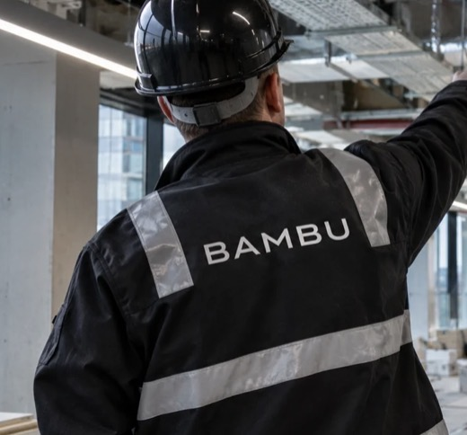

Design ambition means more when it is grounded in the building, the budget and the people who will use the space. BAMBU connects those conversations from the start.
Five connected phases. One accountable conversation.
From the first brief through aftercare, design thinking and construction judgement travel together. Select a station to see what each phase involves.
01 / DISCOVERUnderstandAsk better questions.
Start with people, purpose, building conditions and constraints. Test the brief with a site visit and stakeholder conversations.
02 / EVALUATEPlanDecide with evidence.
Compare design options, budget, milestones and the route to landlord and statutory approvals.
03 / DEVELOPDesignCoordinate the detail.
Join up layouts, finishes, furniture, services, access, fire strategy and technical information.
04 / REALISEDeliverBuild what was agreed.
Plan procurement and construction, coordinate specialists, quality checks, programme and agreed change.
05 / CONTINUESupportMake it last.
Complete commissioning, documentation and aftercare; resolve issues and plan future adaptation.
Open a phase to see the work involved.
02 / EARLY CLARITY
Two decisions worth making early.
The best moment to challenge an assumption is before a drawing, cost or completion date depends on it.
01 / COMMERCIAL LOGIC
Design to budget.
A budget is a design input, not just a figure added at the end. Separate essential works from optional enhancements, allow for building conditions and procurement lead times, and record assumptions so that value decisions remain transparent.
Read the lease and building requirements early. Approvals may involve drawings, specifications, method statements and technical reviews. Reflect the landlord's process and any separate statutory consents in the programme.
We set out dependencies, responsibilities and decisions clearly, so changes to scope, cost or programme can be considered before they become problems on site.

04 / ONE COORDINATED CONVERSATION
The right expertise, around your brief.
Design, technical coordination, fit-out and aftercare should reinforce one another. Explore where BAMBU can help.